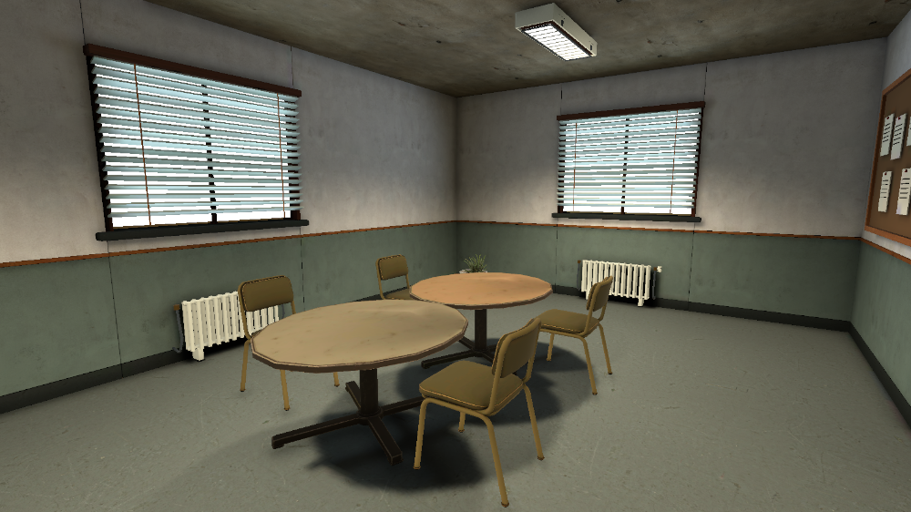
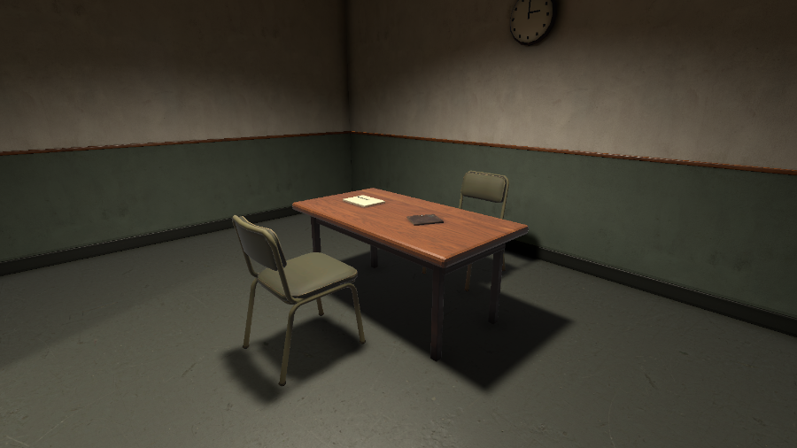
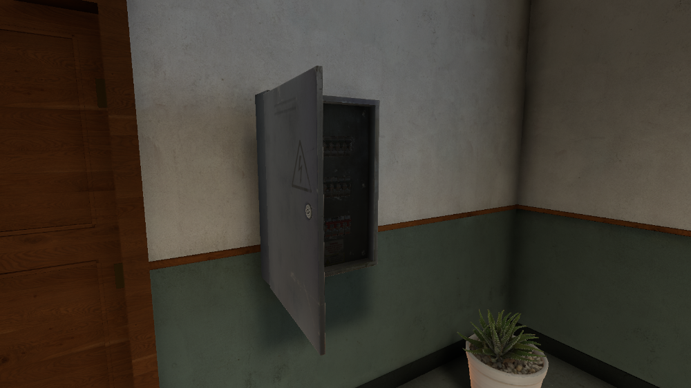
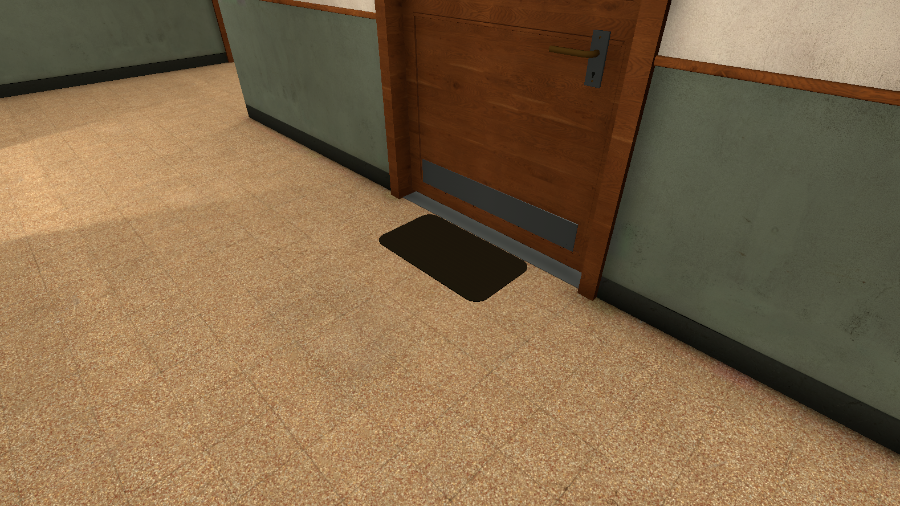
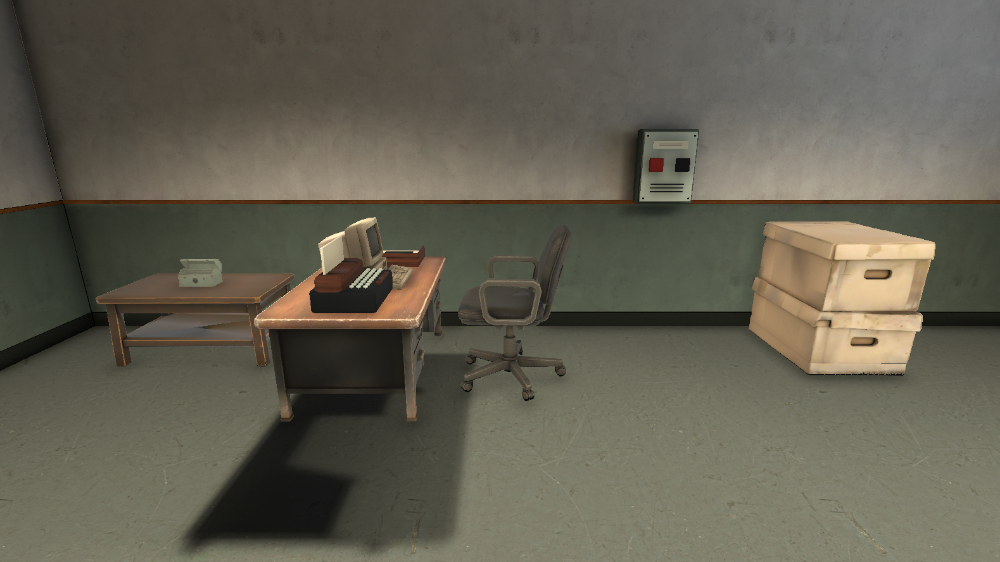
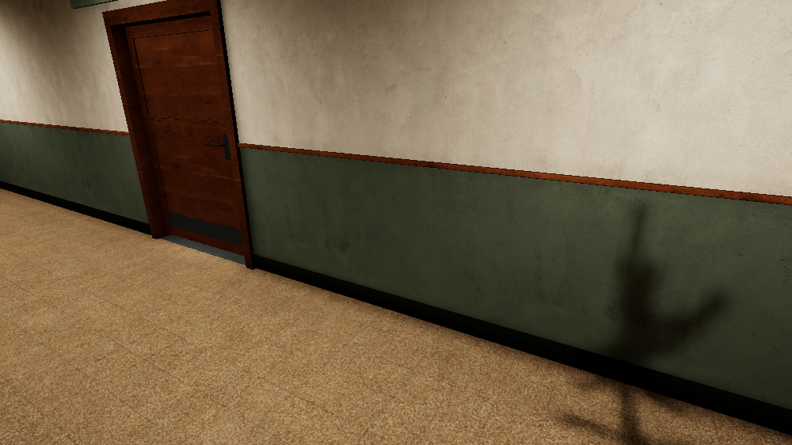
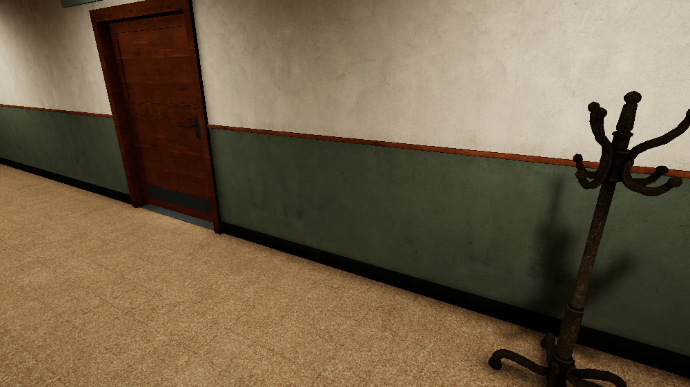
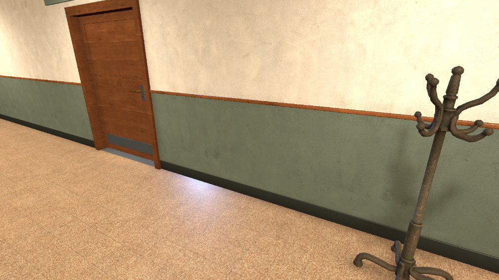
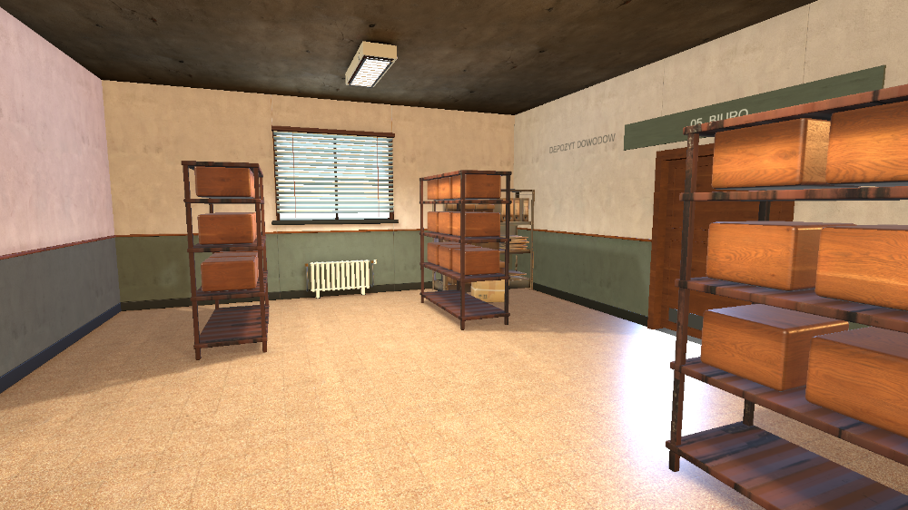

Furniture and visibility fixes
No lighting bake. Old furniture shadows remain until the later bake.

Room 08: restored round tables, closer chairs and warmer finishes.




Visibility bug reproduction

Before: incorrect occlusion hides the rack.
Same camera, only occlusion disabled: the rack returns.

After: singleplayer visibility check.
Verification report